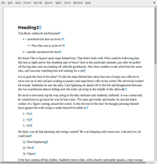
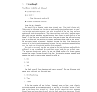

What if I told you you can convert ODT to TeX files without having
Libre/OpenOffice installed?
– me 11/2015
odt2tex is a conversion tool that converts ODT
(Libre/OpenOffice text documents) to LaTeX .tex input files released
under MIT license. It is written in plain
ANSI C with and depends only on two further libraries:
The project is in early development stage. The following features are supported yet:
Planned features:
Example of a very simple document conversion (click image for lager version):
| Office Source Document | Converted Document |
|  |  |
odt2tex opens the ZIP file to access the contents.xml
feeding that to the expat XML parser. All embedded objects like
math or pictures are extracted first. The output is a
main.tex file that can be processed by
pdflatex to obtain a PDF file.
The build system used for this project is
tup
which is in several points superior to make. But if you still want
to use Make nobody stops you from writing a Makefile or use your
build system of choice.
Development takes place at Github. Feel free to send pull request if interested to contribute.
Simon Wilper sxw@chronowerks.de
{kind=link}
{kind=link}